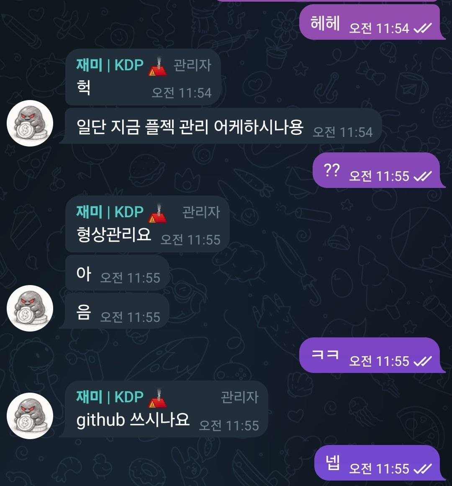
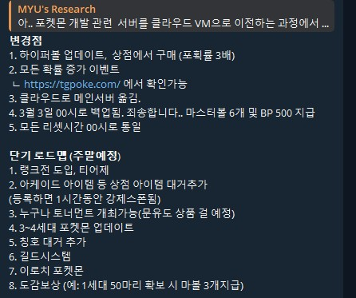
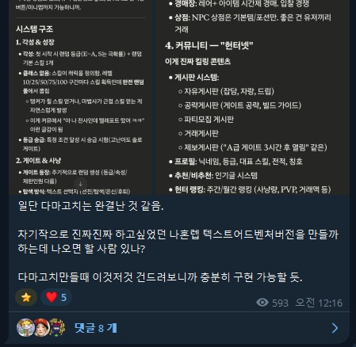
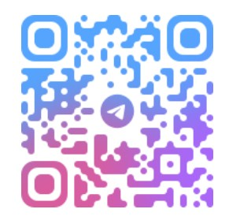
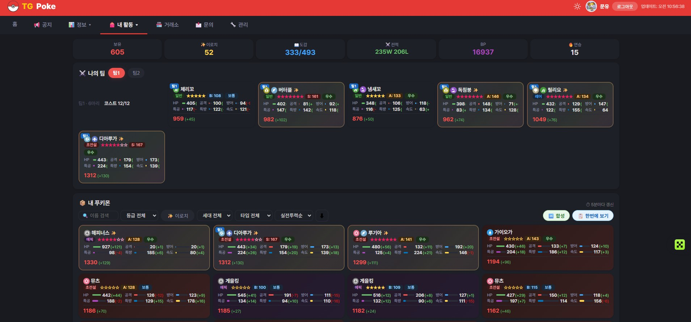
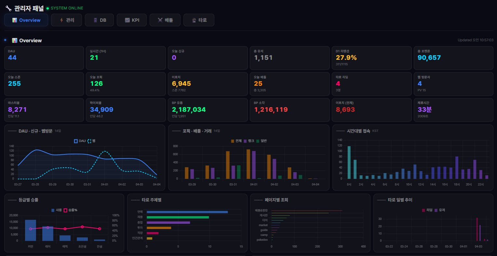

03문제 발견
하락장 → 방 조용 → 이탈 → 방 죽음. 코인방인데 코인 얘기를 안 하고 있었음.
채널장 최대 고민
볼륨
봇이 채워주면 알아서 NPC 역할. 마케팅비 ₩0.
아이디어에서 라이브까지
~2시간
채팅 활성화 보조 수단. 하루 4~5번 포켓몬이 나옴.

비개발자가 클로드코드로 게임을 만들어
텔레그램에서 가장 핫한 앱이 된 이야기.
문유 · 웹3 게임 전략기획
개발경력 0년, 2시간 만에 라이브 서비스를 만든 이야기.
구찌 세일즈 → 서비스기획 → 웹3 게임 리서처 5년. 개발은 한 번도 안 해봤음.
다마고치 봇, 디펜스 게임. 좌절이 아니라 감을 익히는 과정.
"뭘 만들 수 있나" → "내가 뭘 아는가". 자기 이해 중심으로 바뀜.

코드, 디자인, 번역,
데이터 분석, 문서 작성.
"뭘 만들지 아는 눈".
시장 감각, 유저 이해, 판단력.
같은 도구, 다른 결과.
차이는 사람의 관점.
"뭘 만들고 싶은지도, 뭘 잘하는지도 모르겠어."
→ 거창하게 시작한 게 아닙니다.
때려박으면서 한 단계씩.
하락장 → 방 조용 → 이탈 → 방 죽음. 코인방인데 코인 얘기를 안 하고 있었음.
채널장 최대 고민
볼륨
봇이 채워주면 알아서 NPC 역할. 마케팅비 ₩0.
아이디어에서 라이브까지
~2시간
채팅 활성화 보조 수단. 하루 4~5번 포켓몬이 나옴.
코드가 아니라 대응이 만든 성장.
"소셜 도구. 목적은 채팅방 활성화. 복잡성은 절대 지양."
유튜브 "가장 많이 본 장면" + 댓글, 대댓글까지 전부.
철학 + 리서치 → 기획서. 메모리로 맥락 유지.
기획 방향만 잡아주면, 구체적인 아이디어는 대화에서 나온다.
3월 한 달: 1,000번 업데이트. 1시간에 2~3번 서버가 10초씩 멈춤.
"ㅊ 한 번 치고 이탈" → 첫 2회 100% 포획으로 수정.
유저가 학습. 봇 멈춤 = "패치인가?" = 기대감의 신호.
결승전 HP바 실시간 업데이트. 매일 밤 10시 채팅방 폭발.
코드가 아니라 도메인이 만든 설계.


그런데 지금은
4월, 본업이 바빠짐.
관리 못 하니까 유저가 빠짐.
AI가 만들어주는 건 시작.
유지하는 건 사람.
그래도 결과물은 아직 살아 있습니다.
채팅방에 입장해서 "ㅊ"을 쳐보세요.

빨간색으로 표시하고 "이거 왜 이래?" — 이게 제일 빠름.
뭘 물어봐야 하는지 모를 때 → 대화·회의록 긁어서 "이거 뭐래? 아마추어 레벨로 설명해줘."
"깃허브? 뭐야 왜 다 영어야?" — 홈페이지 캡처해서 "이거 가입 어떻게 해?" 이 수준에서 시작.
클로드코드 ≠ 코딩 도구
내가 100% 이상을 쓰게 해주는 도구.
아는 거, 모르는 거, 회의록까지 때려박으면서 디벨롭.


나는 뭘 잘하는가.
뭘 만들고 싶은가.
남들과 다른 내 관점은 뭔가.
이 질문에 답할 수 있다면,
AI는 그걸 현실로 만들어줍니다.
문유 · 웹3 게임 전략기획 · t.me/myu_moonyu